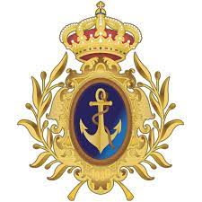
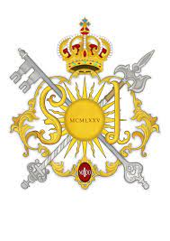
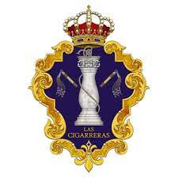
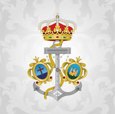
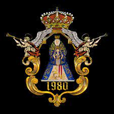

Se funda en mayo del 1980 con la aprobación del Hermano Mayor D. Vicente Acosta y con el apoyo de su junta de gobierno. Esta banda comienza con el estilo de agrupación musical y más tarde se reorganizarían y formarían lo que es en la actualidad, una banda de cornetas y tambores. El gran prestigio de la banda en la actualidad es debido al trabajo de todo el año y su musicalidad. Actualmente el director el Julio Vera y su director musical es Antonio Jesús Castaño conocido popularmente como "Popi" y Fran Ortiz.
Se funda en mayo del 1980 con la aprobación del Hermano Mayor D. Vicente Acosta y con el apoyo de su junta de gobierno. Esta banda comienza con el estilo de agrupación musical y más tarde se reorganizarían y formarían lo que es en la actualidad, una banda de cornetas y tambores. El gran prestigio de la banda en la actualidad es debido al trabajo de todo el año y su musicalidad. Actualmente el director el Julio Vera y su director musical es Antonio Jesús Castaño conocido popularmente como "Popi" y Fran Ortiz.
La Semana Santa de esta banda comienza el Domingo de ramos tras el paso de "El Silencio Blanco" de la hermandad de la Amargura.
El Lunes Santo, tocan la ida detrás del paso de cristo "Cautivo y Rescatado" de la hermandad del polígono de San Pablo.
El Martes Santo, tocan detrás del paso de "Ntro Padre Jesús de la Salud" de la hermandad de la Candelaria.
El Miércoles Santo, tocan detrás del paso de "Stmo cristo de la Sagrada Lanzada" de la hermandad de La Lanzada.
El Jueves Santo no tocan, ya que descansan para su salida con su hermandad. Van tras el paso de cristo de "Ntro padre Jesús de las Tres Caídas". Esta hermandad sale en la madrugá del Viernes Santo y es muy peculiar el cambio de uniforme de azul marino a blanco ya que es el único día del año donde se ponen ese uniforme.
El Viernes Santo tocan detrás del paso de "La Conversión del Buen Ladrón" de la hermandad de Monserrat.
El Sábado Santo y para despedir la Semana, tocan tras el misterio del "Cinco Llagas" de la hermandad de la Trinidad.

Escudo BCT Tres Caídas de Triana
BCT Nuestra Señora Del Sol
Se funda en mayo del 1975. En su origen se inspiró en la desaparecida Banda de la Policía Armada. En 1986 recuperó la tradición de tocar las Lágrimas de San Pedro desde la Giralda el 29 de junio. Esta es una tradición de 1403 de que no se interpretaba desde 1961. En 1988 recuperó la tradición de los Gozos de la Inmaculada con la Hermandad del Silencio. También contribuyó a la reorganización de la Centuria del Santo Entierro y al Bando Anunciador del Corpus Christi. Actualmente el director es José Pardiñas y el director musical es Francisco Javier Pérez Pérez.
La Semana Santa comienza el Sábado de Pasión el la agrupación parroquial tras el paso del "Ntro Padre Jesús de los Afligidos" de la agrupación de Las Maravillas.
El Domingo de Ramos tras el paso de "Jesús en la entrada en Jerusalén" de la hermandad del Amor. Esta estampa es una de las más bonitas de la Semana Santa ya que abre la veda en Carrera Oficial siendo la primera cofradía en entrar.
El Lunes Santo, tocan tras el paso de cristo "San Miguel" de la hermandad de la Tercera Palabra de la localidad de Alcalá de Guadaíra.
El Martes Santo, tocan detrás del paso del "Desamparo y Abandono" de la hermandad del Cerro. En su peculiaridad, este es uno de los recorridos más largos de la Semana Santa estando en la calle más de 12 horas.
El Miércoles Santo, tocan detrás del paso de "La Piedad" de la hermandad del Baratillo.
El Jueves Santo, se desplazan hasta la provincia de Huelva para tocar tras el paso de cristo de "La oración en el huerto" de la hermandad de la Oración en el Huerto.
El Viernes Santo tocan detrás del paso de "Ntro Padre JEsús Nazareno" de la hermandad de La O.
El Sábado Santo para finalizar la Semana, tocan tras su hermandad, tras el cristo de "Varón de Dolores" de la hermandad del Sol.

Escudo BCT Ntra Sra del Sol
BCT Nuestra Señora De La Victoria (Cigarreras)
Es en el transcurso de 1979 cuando en la Hermandad de Las Cigarreras surge el germen de la que hoy día es su banda más emblemática: La banda de cornetas y tambores Nuestra Señora de la Victoria “Las Cigarreras”. Como ya es sabido por todos, en sus comienzos lleva un estilo mixto, que no era otra cosa que un híbrido entre los ya conocidos de la Policía Armada y de la Guardia Civil. Su director es Jose Manuel Toscano y su director musical es Cristóbal López Gándara
La Semana Santa comienza el Viernes de Dolores tras el paso del "Ntro Padre Jesús de la Misión" de la hermandad de la Misión.
El Domingo de Ramos tras el paso de "Jesús en la última cena" de la hermandad de la Cena.
El Lunes Santo, tocan tras el paso de cristo "Jesús del Soberano Poder ante Caifás" de la hermandad de San Gonzalo.
El Martes Santo, tocan detrás del paso del "Ntro Padre Jesús ante Anás" de la hermandad de Dulce Nombre.
El Miércoles Santo, tocan detrás del paso de "Ntro Padre Jesús del Soberano Poder en su Prendimiento" de la hermandad de Los Panaderos.
El Jueves Santo,tras el paso de cristo de su hermandad "Ntro Señor Jesucristo atado a la columna" de la hermandad de las Cigarreas.
El Viernes Santo tocan detrás del paso de "Stmo cristo de la Salud" de la hermandad de la Carretería.
El Sábado Santo para finalizar la Semana, tras el cristo de "Sagrado Decreto" de la hermandad de la Trinidad.

Escudo BCT Las Cigarreras
BCT Rosario de Cádiz
En 1998 por motivos ajenos a la formación, la banda adopta el nombre de la Patrona de Cádiz, Nuestra Señora del Rosario Coronada, fundándose así la Asociación Musical Nuestra Señora del Rosario.
Un año después, en la cuaresma de 1999, la banda de Cornetas y Tambores Nuestra Señora del Rosario Coronada se presenta en la Iglesia de Santa Cruz (Cádiz), siendo amadrinada por la Banda de Cornetas y Tambores de la Presentación al Pueblo de la localidad sevillana de Dos Hermanas.
Por aquella fecha la dirección musical era compartida por Ángel Ruiz, profesor de música y experimentado músico de la Banda de la Comandancia Móvil de la Guardia Civil (Eritaña), Jorge Águila e Isaac Gómez, que luego más tarde llegarían a ser directores musicales de la Presentación al Pueblo de Dos Hermanas. Su dirección la forma Jesús Guerrero Marín como director general y musical.
El Domingo de Ramos tras el paso de "Jesús de las Penas" de la hermandad de la Estrella.
El Lunes Santo, tocan tras el paso de cristo "Cristo de las Aguas" de la hermandad de las Aguas.
El Martes Santo tocan tras el paso "Ntro Padre Jesús de la columna y azotes y Mª Stma de las Lágrimas" de la archicofradía de la Stma Resurrección y Penitencia de Cádiz.
El Miércoles Santo, tocan detrás del paso de "Stmo cristo de la Sed" de la hermandad de La Sed.
El Jueves Santo,tras el paso de cristo de "Stmo cristo de la Exaltación" de la hermandad de la Exaltación.
El Viernes Santo tocan detrás del paso de "Stmo cristo de la Salud" de la hermandad de la Carretería.
El Sábado Santo para finalizar la Semana, tras el cristo de "Sagrado Decreto" de la hermandad de la Trinidad.

Escudo BCT Rosario de Cádiz
AM Virgen de los Reyes
La Agrupación Musical Virgen de los Reyes nace en 1980 bajo el amparo de la parroquia de San Bartolomé donde se ubicaba en aquella época la Hermandad del Jesús Despojado de sus Vestiduras, donde comenzó la que era la Banda de los Dolores y Misericordias. La Banda comienza a formarse para poder procesionar tras el Señor Despojado. La primera actuación en la capital Hispalense fue cuando acompaña el 12 de Octubre del mismo año a la Stma. Virgen del Pilar de la Parroquia de San Pedro, para días después abrir paso con la Hermandad del Rosario de la Parroquia de San Julián. Ya en el año 1981 es cuando el Domingo de Ramos procesionan con el Jesús Despojado de sus Vestiduras. En 1983, acompañan por primera vez al Cristo de la Sed y al Resucitado. Con el paso del tiempo, en el año 1992 la formación decidió seguir su camino, ajeno a cualquier Hermandad con el nombre de “Agrupación Musical Virgen de los Reyes”. Su director es Antonio Velasco y su director musical es Javier Cebrero.
Antes de todo esto, el sábado anterior al Sábado de Pasión, tocan detrás de la hermandad de la Abnegación de San Bernardo.
La Semana Santa comienza el Sábado de Pasión tras el paso del "Ntro Padre Jesús del Divino Perdón" de la hermandad del Divino Perdón del Parque Alcosa.
El Domingo de Ramos tras el paso de "Jesus Despojado de sus Vestiduras" de la hermandad de Jesús Despojado.
El Martes Santo, tocan detrás del paso de cristo "Salud y buen Viaje" de la hermandad de San Esteban.
El Viernes Santo tocan en Jerez trás del paso de "La Exaltación" de la hermandad de La Exaltación .
Ponen el broche a la Semana Santa tocando tras el cristo Resucitado de la hermandad de la Resurrección.

Escudo AM Virgen de los Reyes
AM Redención
Corría el año 1978 en el sevillano barrio del Juncal,cuando Don José Ruesga Bono, funda la entonces denominada ”Banda de Cornetas y Tambores Ntra. Sra.del Juncal”, en el seno de la corporación del mismo nombre. Durante los primeros años, acompañamos musicalmente a la titular de gloria de dicha hermandad.En 1984, tras el éxito conseguido por el denominado “estilo Guardia Civil” en la Semana Santa sevillana, y personificado en la “Madre y Maestra” de las agrupaciones, Santa María Magdalena de Arahal, la dirección decide cambiar el estilo musical de la formación al de “Agrupación Musical”.Tan sólo dos años después, en 1986, la Hermandad de la Redención tiene a bien acoger a esta joven banda, perteneciendo desde ese mismo instante a la Hermandad y pasando a denominarse “Agrupación Musical Ntro. Padre Jesús de la Redención”.Tras muchos años de dedicación, esfuerzo e ilusión abriendo los cortejos de señeras Hermandades sevillanas, en el año 1993 llegó la ansiada recompensa: acompañar musicalmente al Señor de la Redención en la tarde del Lunes Santo.. Su director es Emilio Muñoz.
La Semana Santa comienza el Sábado de Pasión tras el paso de "Nuestro padre Jesús de la salud" de la hermandad de Bellavista.
El Domingo de Ramos tras el paso de "Puente Cedrón" de la hermandad de la Milagrosa.
El Lunes Santo, tocan tras el paso de cristo "Beso de Judas" de la hermandad de la Redención.
El Martes Santo, tocan detrás del paso de cristo "Cautivo y Rescatado" de la hermandad del Cautivo de Alcalá de Guadaíra.
El Miércoles Santo, tocan detrás del paso de "Ntro Padre y Señor de las Penas" de la hermandad del Desconsuelo de Jerez.
El Jueves Santo,tras el paso de cristo de "Oración en el huerto" de la hermandad de Monte-Sión.
El Viernes Santo para cerrar su agenda, tocan en Jerez trás del paso de "Vera Cruz" de la hermandad de Vera Cruz de Albaida.